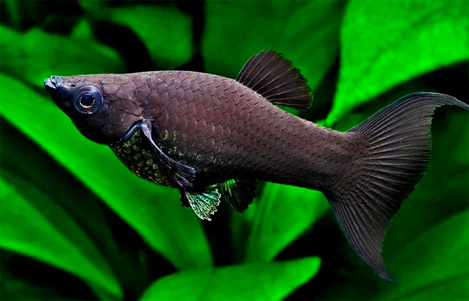

| Аквариумные |
|  |
Моллинезии |
Симпатичные и яркие рыбешки с большим выбором интересных расцветок наиболее благосклонны к
новичкам-аквариумистам и прощают им многие ошибки. Исключением является только селекционная моллинезия-баллон – от
такой покупки любителям лучше отказаться. |
 |
Скалярии |
Самые популярные и легко узнаваемые рыбешки в любом аквариуме.
Они давно уже адаптировались к домашним условиям содержания, и не настолько капризны, как считалось ранее.
Единственное требование – температура воды должна быть не ниже +22 °С, иначе рыба может заболеть. |
Рыбы Чёрного моря |
 |
Сельдь |
Рыбу отличает слегка сжатое с боков удлиненное тело с грудным выступом-килем.
Спинка животного отливает сине-зеленым, а брюшко серо-серебристое. В длину рыба достигает 52-ух сантиметров,
но большинство взрослых особе не превышают 33-ех. |
 |
Килька |
Миниатюрная родственница сельди. Второе имя – шпрота.
Для ихтиологов же шпрота – рыба вида спраттус. Его представители не вырастают больше 17-ти сантиметров и живет максимум 6 лет.
Обычно это 4 года против 10-ти, отведенных на век сельди. |